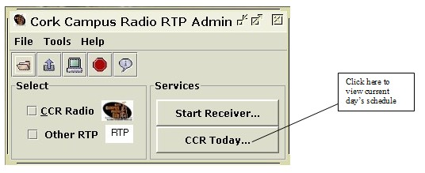
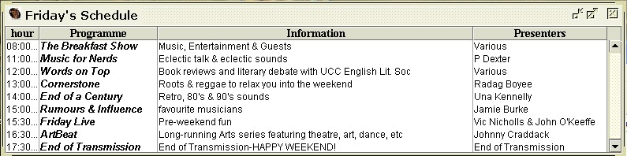
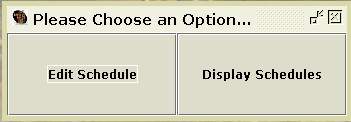
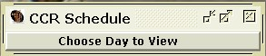
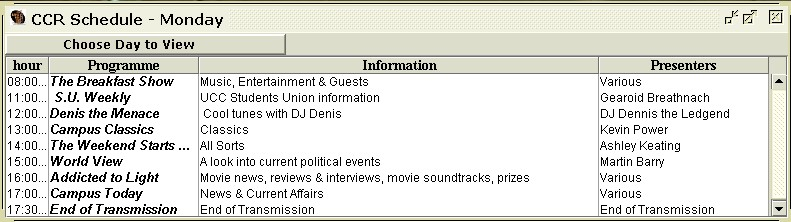

Introduction
Features
Listen to CCR!
Listen to User Specified RTP
View CCR Schedule
RTP Session History
CCR 'Media Player'
Editing the Schedule
Save an RTP Stream
Requirements and Setup
About CCR, More Info
View the Cork Campus Radio Schedule

1) Viewing Schedule for 'Today':
A user can view 'Cork Campus Radio's' schedule's through the 'Cork Campus RTP Admin'. This will give the information on the station's programmes for that particular day including:
- Time/Name of programme.
- A short description of the programme.
- The presenters of the programme.

Figure 2.1: View Schedule
A window is displayed showing that particular day's programming (see fig. 2.2 below). Should this not happen the database may be undergoing maintenance.

Figure 2.2: Schedule as displayed in 'Cork Campus Radio RTP Admin'.
2) Viewing the Schedule for any particular day of the week:
The user of the 'Cork Campus Radio RTP Admin' can view any day of the week's schedule, showing the schedule that will be viewed by users of the 'Cork Campus Radio RTP Client' version of this application.To access this utility the user must choose the 'Edit/Display' schedule item in the 'Tools' menu of the 'Cork Campus Radio RTP Admin' main window. They are then presented with the simple window shown in figure 6.1 below:

Figure 6.1 - Database utility 'chooser' window.
By choosing the 'Display Schedules' button, the user will be presented with a simple window with a menu button populated by the days of the week (figure 6.2 below):

Figure 6.2 - 'CCR Schedule..'display window.
To view a particular day of the week, the user choose's the required day from the menu. The schedule will then be displayed in a table format with the window's title indicating the day being viewed (figure 6.3 below).

Figure 6.3 - Schedule view with 'CCR Schedule' window.